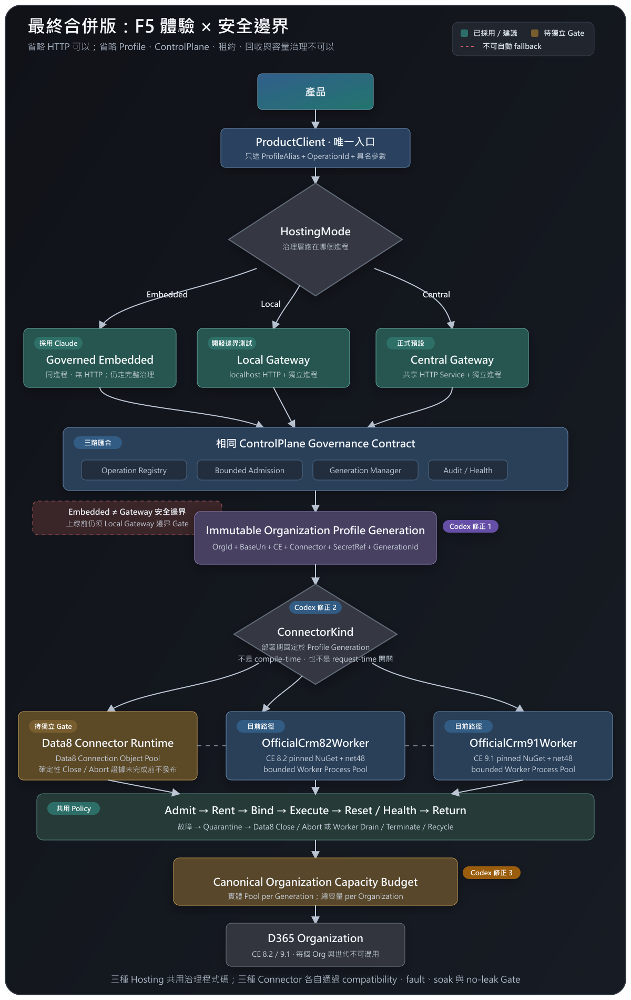

Claude Draw.io 的主線
產品→ConnectionMode→Profile→ConnectorKind→Pool → CRM
它做得好的：把「Hosting 模式」與「Connector 類型」分成兩軸；明確畫出 F5 Embedded、per-Organization Pool、借出／歸還。
Claude 的兩份 Draw.io 設計有三個真正優點：雙軸命名、三種模式共用治理、以及 F5 的 Embedded 體驗。我採用這三點，再保留官方 CE 8.2／9.1 Worker 的現行路線，並修正 Pool、世代與隔離語意。
綠色是已採用或建議；黃色是保留但要獨立 Gate；紅色虛線是不能跨越的安全邊界。

Claude 的概念很接近；差異集中在五個會影響可部署性的地方。
它做得好的：把「Hosting 模式」與「Connector 類型」分成兩軸；明確畫出 F5 Embedded、per-Organization Pool、借出／歸還。
我補上的：Embedded 不繞過治理；Official 拆成 CE 8.2／9.1；實體 Pool 綁 Generation；容量按物理 Organization 聚合；故障資源隔離後才回收。
不是全盤否定，也不是照單全收。
HostingMode 表示治理層所在進程；ConnectorKind 表示 Profile 使用的傳輸。兩者不混成一個開關。
開發可用 Governed Embedded；要測 HTTP／授權／序列化，再切 Local Gateway。Central 是正式部署拓樸。
Operation Registry、容量准入、Profile replace-and-drain、稽核與健康檢查在三種 Hosting 都存在。
它是部署期寫入不可變 Profile Generation 的選擇；request-time 不可切換，也不可 fallback。
共享通用租約／生命週期政策；Data8 與 Worker 各自擁有符合資源型態的 adapter pool。
官方 Worker 目前就是 CE 8.2／9.1 的主要實作；未通過的路徑可以 NotReady，但不能靠不測試來假裝可回滾。
這是「治理層跑在哪裡」的決策，不是 Connector 的決策。
網站進程內執行 ControlPlane／Profile／Pool。最適合 VS F5 與快速開發，但與正式環境少了 HTTP／進程隔離。
開發便利性最高 · 仍需 Local Gateway 邊界驗證產品呼叫 localhost Gateway；Gateway 再管理 Worker。與 Central 共用契約，可驗證 HTTP、授權、序列化與 process lifecycle。
開發整合與邊界測試首選多產品共用正式服務；集中 Profile、容量、稽核、健康、故障回收與 Credential 邊界。
正式部署首選三個條件用同一個生命週期表達：借出、使用、清除、歸還；故障物件永不回池。
這是 Claude 圖沒有完全說清楚、但會直接影響效能與 Leakage 風險的地方。
| Connector | 池化的資源 | 目前定位 | 必過 Gate |
|---|---|---|---|
| Data8 | Data8／WCF 連線物件與其可變狀態 | 保留選項 Gateway adapter 待補齊 | IDisposable／Close、狀態重設、8.2／9.1 矩陣、stress／soak／baseline |
| OfficialCrm82Worker | net48 Worker Process、Pipe、CrmServiceClient | 目前路徑 | CE 8.2 真實操作、worker hash、fault／drain／recycle、no-leak |
| OfficialCrm91Worker | net48 Worker Process、Pipe、CrmServiceClient | 目前路徑 | CE 9.1 真實操作、worker hash、fault／drain／recycle、no-leak |
不是把 Data8 直接刪掉，而是讓每個選項有自己的證據。
CE 8.2／9.1 操作矩陣、錯誤、timeout、Profile 隔離、確定性 cleanup。官方 Worker 與 Data8 不互相代替。
多產品、同 Org 聚合容量、崩潰隔離、Active／Draining、回收、壓測與 soak。Embedded 仍要補 Local Gateway 邊界證據。
正式預設 Central，開發預設 Embedded 或 Local；移除未治理舊引用，不因名稱而刪除已通過 Gate 的 Data8。
Claude 有一個關鍵修正值得直接採納；其餘用工程契約補齊。
這能保留你最在意的 VS 2026 F5 體驗，同時讓開發與正式環境共用 ControlPlane／Profile／Pool 政策。Local Gateway 仍保留，專門驗證 HTTP／授權／進程邊界；Central Gateway 是正式部署。